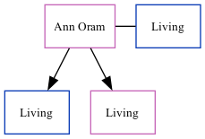

Ann C Lott (née Oram)
[ Home ] | [ Calendar ] | [ Surnames Index ] | [ Family History ]Ann Oram, the wife of Robert J Lott (the second cousin on the father's side of Nigel Horne), and married Robert (with whom she had 2 surviving children Darren Michael and Jodie Kay) in Dover, Kent, England around Aug 19791.
Citations
- England & Wales, Marriage Index: 1916-2005 Online publication - Provo, UT, USA: The Generations Network, Inc., 2009.Original data - General Register Office. England and Wales Civil Registration Indexes. London, England: General Register Office. © Crown copyright. Published by permission of the Cont
Family Tree
Generated by ged2site. Last updated on Nov 13, 2024